Overview
콘텐츠 소비에 머물던 경험을 탐색과
구매로 연결하기
주말토리는 뉴스레터에서 주말 여가 O2O 서비스로 사업을 확장했지만 기존 구독자의 서비스 이용은 저조했고 서비스에
진입한 사용자 또한 연결된 콘텐츠만 확인한 뒤 이탈해 추가적인 정보 탐색이나 상품 예약으로 이어지지 않았습니다. 이에 구독자 설문을 바탕으로 주말 계획의 구체화 정도와 이용 목적에 따른 탐색 유형을 정의하고 뉴스레터에서 형성된 관심이 콘텐츠 소비와 상품 발견·구매로 이어지도록 서비스 구조를 재설계했습니다. 그 결과 MAU가 1만 명 증가하고 콘텐츠
CTR과 평균 체류시간이 상승했으며 판매 상품 수는 10개 이하에서 30개 이상으로 확대되었습니다.
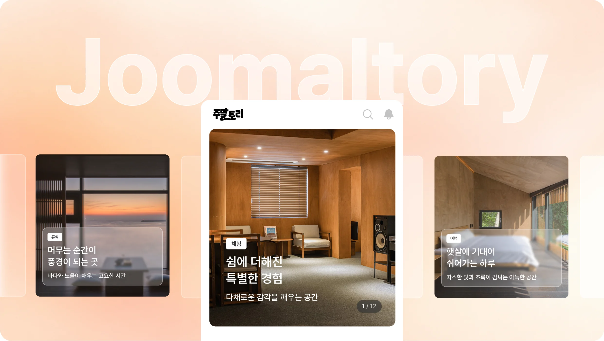
Background
서비스 확장 이후에도 사용자 경험은
콘텐츠 소비에 머물러 있었어요.
주말토리는 매주 주말에 즐길 수 있는 콘텐츠를 소개하는 뉴스레터로 시작해 실제 예약과 구매까지
지원하는 주말 여가 O2O 서비스로 사업 영역을 확장했습니다.
그러나 서비스 확장 이후에도 사용자 경험은 뉴스레터와 단일 콘텐츠 소비에 머물러 있었고 사용자의
관심이 서비스 내 탐색과 구매로 이어지지 않았습니다. 이에 커머스 성장을 위해 코어 사용자인 뉴스레터 구독자가 콘텐츠를 읽는 데 그치지 않고 서비스에 진입해 콘텐츠를 탐색하고 상품을 발견·구매할 수 있도록 전체 사용자 경험을 재설계하는 프로젝트를 진행했습니다.
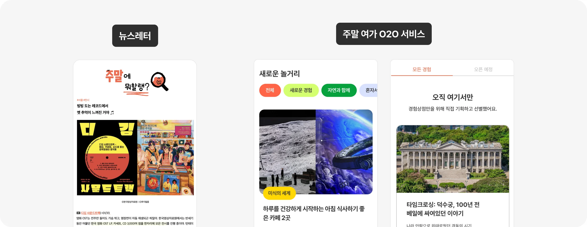
Discovery
코어 사용자의 서비스 전환율이 낮고
서비스 진입 후 다음 탐색으로 이어지지 않았어요.
뉴스레터 구독자 중 서비스 이용자는 약 32%에 머물렀고 서비스에 진입한 이후에도 콘텐츠 탐색과 상품 발견으로 행동이 이어지지 않는다는 점을 확인했습니다.
그리고 잔존 사용자의 다수가 콘텐츠, 커머스 메인으로 이동하여 탐색을 이어 가는 것을 확인할 수 있었습니다.
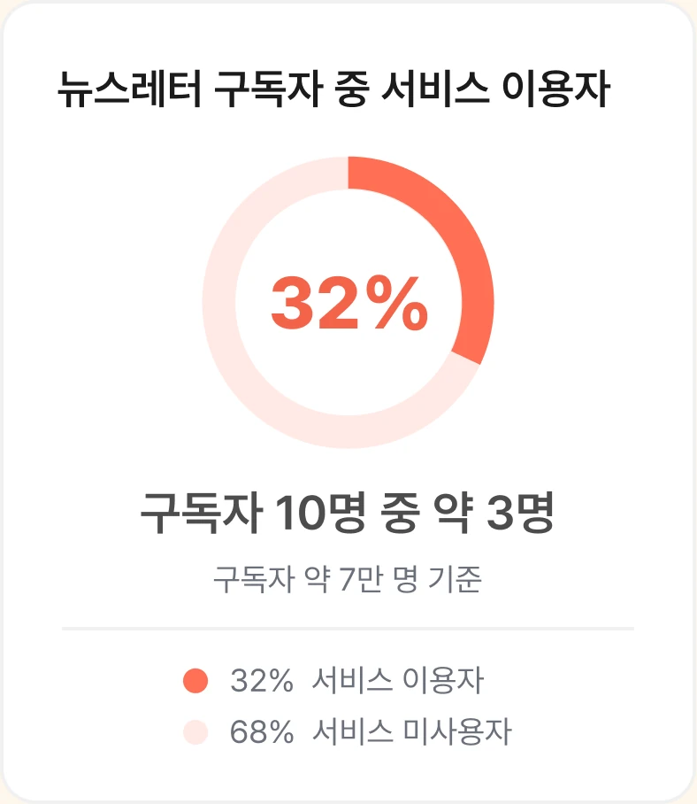
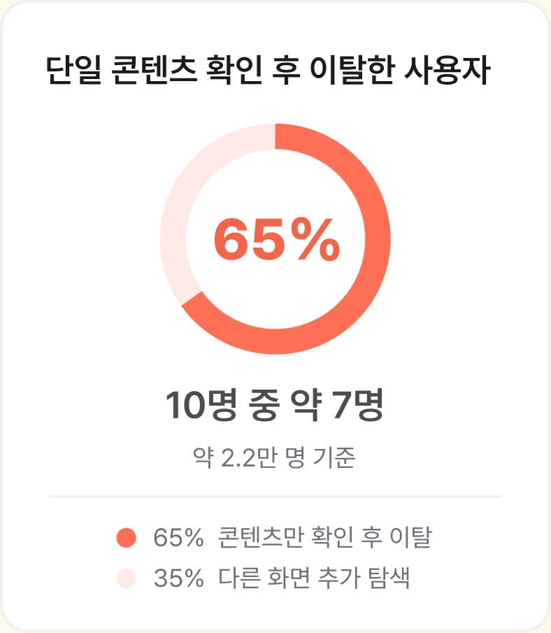
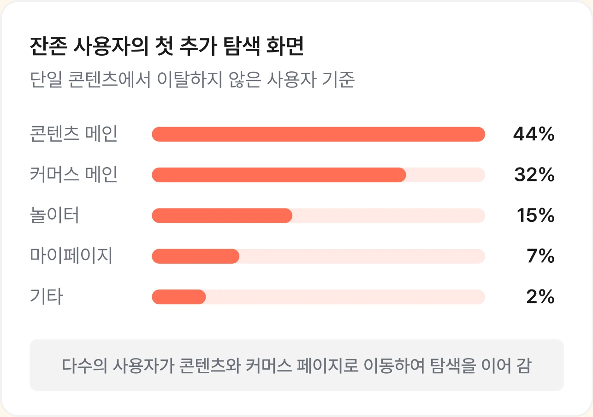
User Research
주말 계획의 구체화 정도와 탐색 목적에 따라 필요한 정보가 달랐어요.
행동 데이터를 통해 사용자 여정이 단절되는 지점은 확인했지만 이탈의 구체적인 원인까지 파악하는 것은 어려웠습니다. 이에 서비스 이용 경험에 따라 설문을 진행하여 서비스에 기대하는 가치, 주말
계획과 놀거리 탐색 과정을 확인하고자 했습니다.
주말 계획을 세우기 시작한 계기와 구체화 정도, 탐색 순서, 선택 기준, 예약·구매로 이어지지 않은
이유를 분석한 결과, 사용자의 주말 계획의 구체화 정도와 해결하려는 목적에 따라 필요한 정보가
달라진다는 점을 확인하였고 이를 토대로 네 가지 탐색 유형을 정의했습니다.
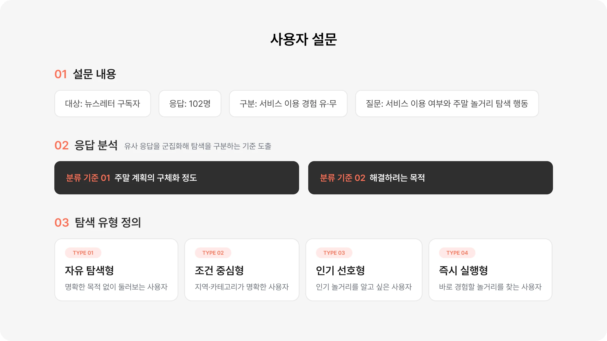
Problem
서비스만의 차별화된 가치와
탐색 경험이 부족했어요.
사용자의 목적에 맞는 콘텐츠와 상품으로 연결하지 못해 추가 탐색과 예약·구매로 이어지는 여정이
단절되고 있었습니다.
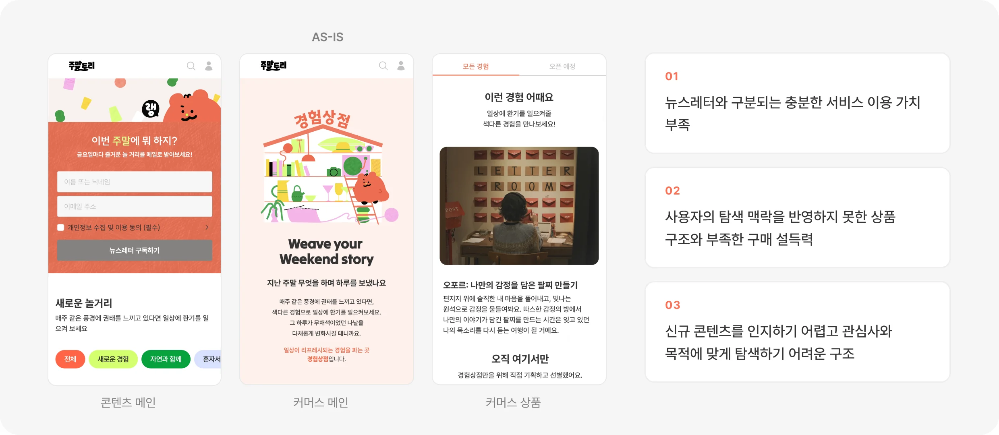
Hypothesis
뉴스레터로만 얻기 어려운 목적·상황별 콘텐츠와 상품을 연결하면 사용자는 서비스의 차별화된 가치를 인식하여
서비스 유입, 리텐션, 상품 탐색 및 구매 행동의 증가로 이어질 것이다.
Strategy 01
탐색 유형에 따른 콘텐츠 진입점
설계하기
사용자의 주말 콘텐츠 탐색 유형별로 필요한 경험을 정의하고 각 유형에 적합한 콘텐츠와 상품에
빠르게 도달할 수 있도록 서비스 진입 구조의 설계 기준을 마련했습니다.
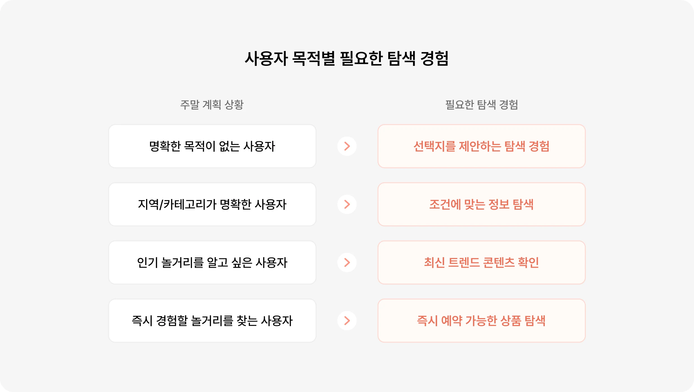
Strategy 02
탐색 경험을 프로덕트 핵심 기능으로
연결하기
Strategy 01에서 정의한 탐색 유형을 바탕으로 사용자의 목적별 필요 경험을 프로덕트의 핵심
기능과 경험으로 이어질 수 있도록 설계했습니다.
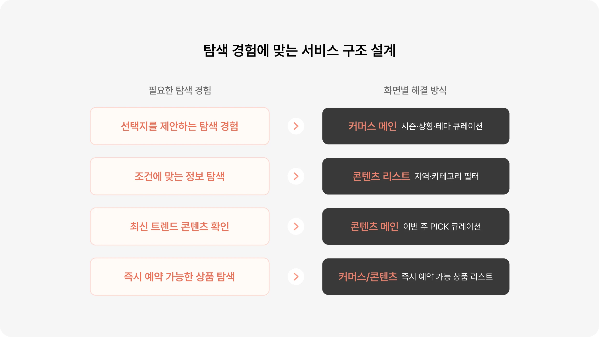
Strategy 03
뉴스레터·콘텐츠·커머스를 연결해
연속적인 탐색 경험 설계하기
뉴스레터는 새로운 콘텐츠를 제공하고 서비스로 유입시키는 채널로, 콘텐츠 영역은 목적과 취향에
따라 정보를 탐색하는 허브로, 커머스 영역은 주말 여가 상품을 발견하고 예약하는 영역으로 역할을 설정했습니다. 각 영역이 서로의 유입 경로로 기능하게 함으로써 독립된 경험으로 분리하지 않고 어느 경로에서 시작하더라도 사용자가 자신의 관심사와 목적에 따라 각 영역을 유연하게 넘나들 수 있도록 연결하고자 했습니다.
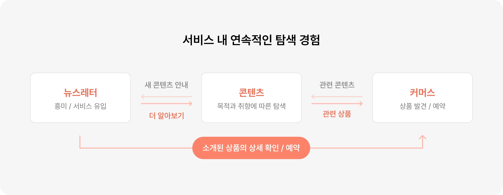
Solution 01
시즌·상황·테마 중심의 큐레이션으로
사용자의 구매 맥락을 자극했어요.
주말토리의 상품은 지금 당장 구매하지 않아도 사용자의 일상에 직접적인 영향을 끼치지 않는 원츠(Wants) 기반의 주말 여가 상품으로 기존의 상품을 단순히 나열하는 구조만으로는 사용자가 지금
당장 상품을 구매해야 할 이유를 발견하기 어려웠습니다.
이에 사용자의 주말 맥락이 보이도록 시즌·상황·테마를 중심으로 시의성이 높은 주제와 함께하는
대상을 기준으로 상품을 큐레이션하여 자신의 니즈와 연결된 상품을 발견하고 판매가 부진했던
상품은 새로운 맥락으로 재발견될 수 있도록 구성했습니다.
또한 새로 등록된 상품에 후기가 없어 구매를 망설이는 사용자에게 에디터가 느낀 매력과 추천 이유를 전달해 구매에 대한 불확실성을 낮추고 신뢰와 근거를 제공하여 의사결정을 돕고자 했습니다.
Solution 02
‘이번 주 PICK’과 취향 기반 추천으로
콘텐츠 발견의 출발점을 만들었어요.
기존 콘텐츠 영역은 리스트 구조로 사용자가 이번 주에 새롭게 업데이트된 콘텐츠를 인지하기 어렵고
과거 콘텐츠도 지역과 취향 등 자신의 주말 계획에 맞게 탐색하기 어려웠습니다.
이에 매주 새로운 콘텐츠를 선별한 ‘이번 주 PICK’으로 공통 탐색의 출발점을 제공했습니다. 또한
게이미피케이션 요소로 추천이 필요한 사용자는 자신의 취향을 나타내는 ‘토리’를 선택하고, 관심사에
맞는 상품과 장소를 추천받도록 설계해 콘텐츠 발견부터 예약까지 자연스럽게 이어지도록 했습니다.
문화 캘린더를 통해서는 날짜별 공연·전시 일정을 확인하고 비즈니스 측면에서는 주최 측과 광고·제휴
기회를 증가시켜 비즈니스 확장성을 높이고자 했습니다.
이를 통해 사용자는 새로운 콘텐츠를 빠르게 발견하고 일정·지역·취향을 기준으로 필요한 정보를 좁혀
탐색 효율을 높일 수 있게 되었습니다.
Solution 03
취향 탐색부터 방문 정보까지
주말 계획을 서비스 내에서 마무리해요.
기존에는 서비스 내에 별도의 장소 페이지가 없어 관심 있는 장소를 발견해도 주소·영업시간·편의시설 등 방문에 필요한 정보를 확인할 수 없었습니다. 그래서 외부 서비스에서 장소 탐색을 이어 가야 했고 이 과정에서 주말토리의 콘텐츠와 장소 탐색 흐름이 단절되었습니다.
이에 장소 페이지의 역할을 방문 여부를 결정하는 경험으로 정의하고 이미지·에디터 추천·한 줄 소개·취향 키워드·꿀팁으로 장소의 매력을 전달하고, 주소·영업시간·편의시설·지도 앱 연결 등 실제 방문에 필요한 정보를 제공했습니다. 또한 유사한 취향·테마의 장소, 관련 아티클을 연결하여 사용자가 외부 서비스로 이동하지 않고 서비스 내에서 주말 계획을 구체화할 수 있도록 설계했습니다.
Results
탐색 경험 개선이 서비스 이용 확대와
커머스 성장으로 이어졌어요.
목적별 콘텐츠 탐색 구조와 최신·연관 콘텐츠로 발견 경로를 개선한 뒤 서비스에 진입한 사용자가 콘텐츠와 상품을
지속해서 탐색하는 행동으로 확대되었고 커머스 이용과 상품 운영 규모의 성장으로 이어졌습니다.
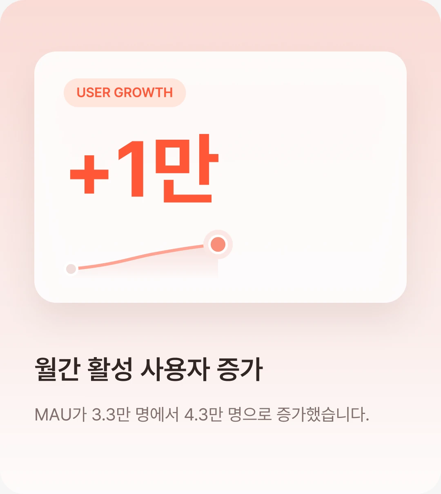
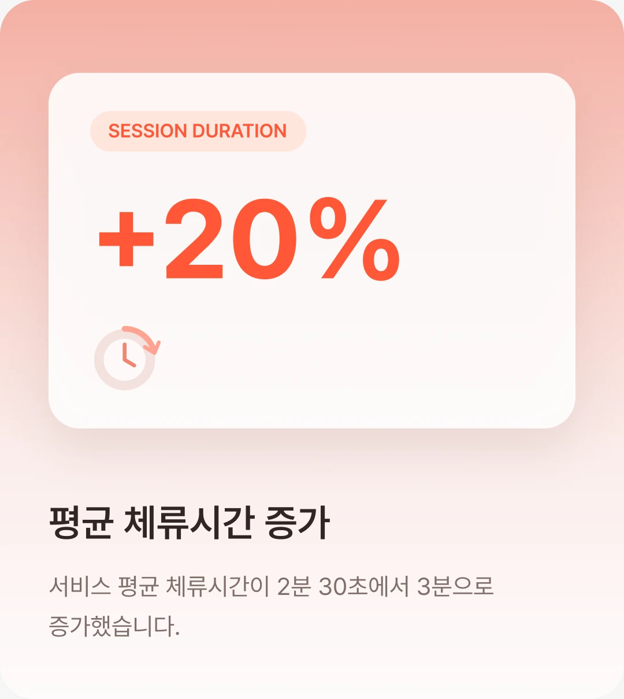
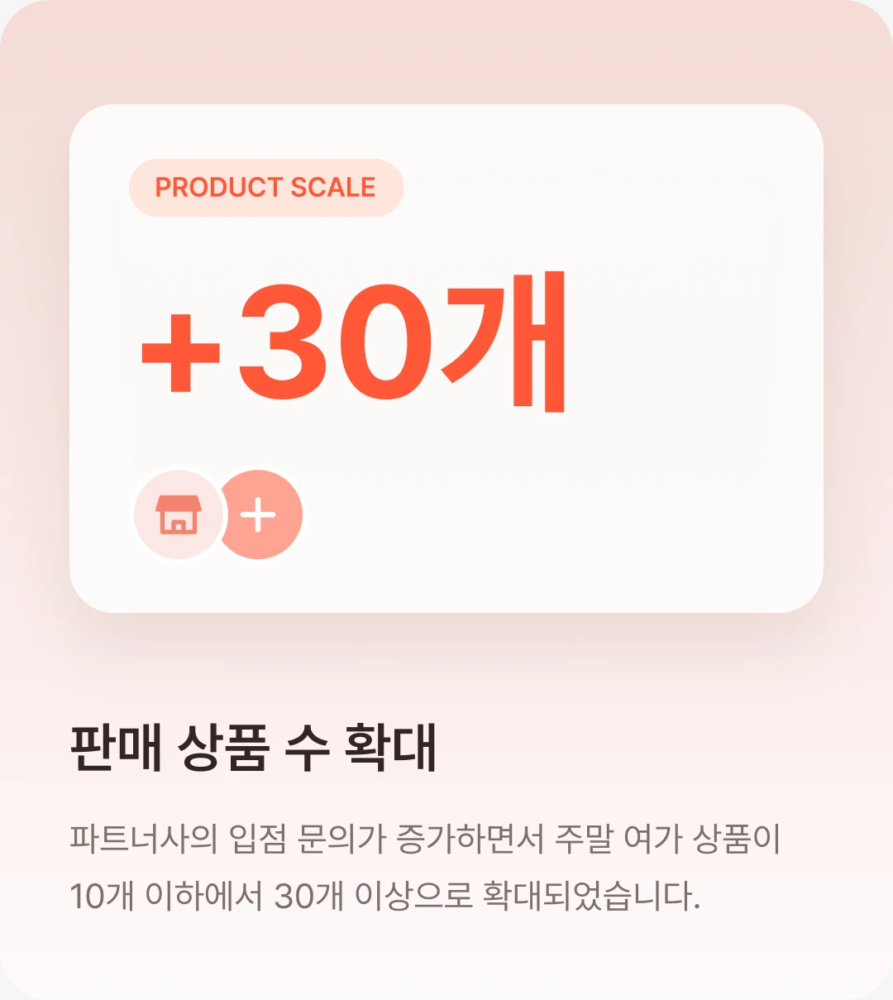